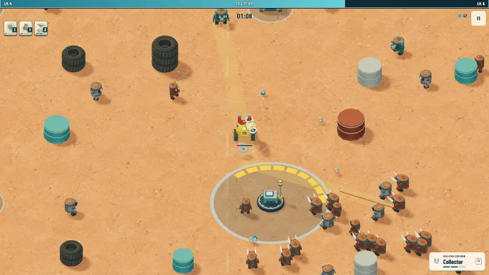
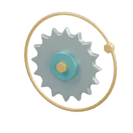
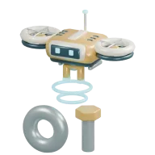
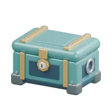
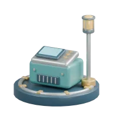
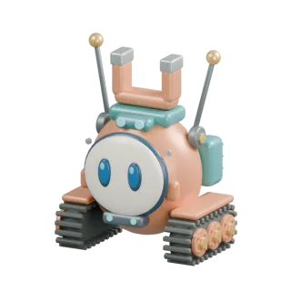
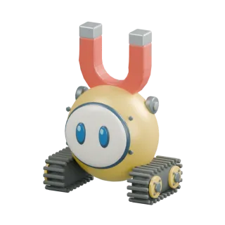
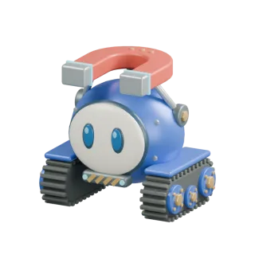
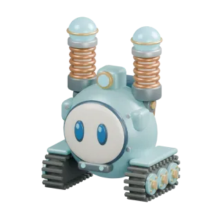

Endless scrapyard survival
JUNKMAGNET
A tiny robot. An endless scrapyard. Your enemies become your ammunition.
Free in your browser · No download or account · Keyboard or touch
Survive · Salvage · Repeat
The swarm is your ammo

-
Collect the wreckage
Drive over silver scrap from wrecked robots. It snaps into an orbit around you.
-
Your orbit fires on its own
Scrap launches at the nearest enemy automatically. Spend it, then rebuild from what you destroy.
-
Level up and build
Blue energy levels you up. Pick one of three upgrades and grow a build that outlasts the swarm.
What’s in the yard
-

Build a scrap storm
Orbiting saws, chain lightning, a magnet harpoon, a slag mortar and more. Reach the right ranks in one run to unlock six weapon evolutions.
-

Bring a helper drone
Switch your drone between collecting, repair and guard duty. Each role upgrades on its own.
-

Explore the scrapyard
Bosses, elite enemies, supply chests and salvage contracts wait out in the endless yard. Survive 15 minutes and defeat the Scrap Colossus to unlock the Night Shift.
-

Come back tomorrow
A new Daily Shift challenge every day, with a bonus for keeping your streak. Work orders pay parts as you reach new goals.
-




Upgrade between runs
Bank parts after every run to unlock SCOUT, VOLT and MAGNA, then buy permanent workshop upgrades.
Play or explore the code
Explore the source
Read the code, run it locally, or build your own version. Junk Magnet is open source under the MIT License.
View on GitHub